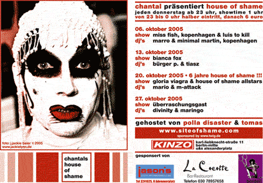

| dunst recommends this event | 6. Oktober 2005 |
 |
|
| Performance: Miss Fish (Vokal), Louis from Glamour To Kill (Guitar) Minimal Martin (DJ & Programming) |
Chantal House Of Shame KINZO-club, Karl-Liebknecht-Straße 11 Berlin, Germany. www.siteofshame.com |